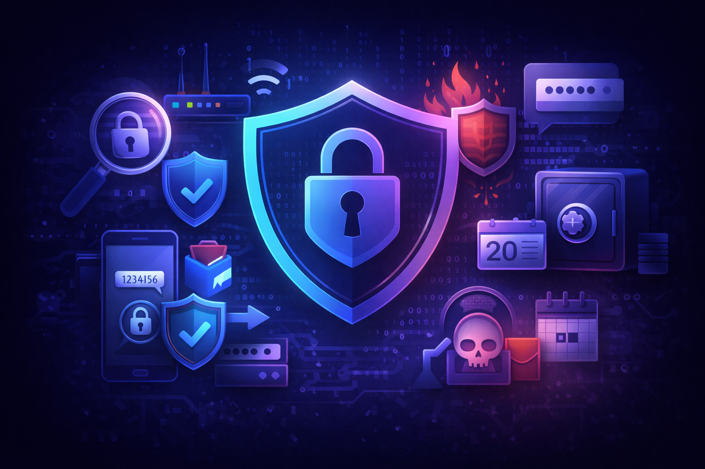

About
As technology continues to advance, cyber threats are becoming more frequent and more sophisticated. Everyday activities such as attending classes online, shopping, banking, or communicating through social media all rely on digital systems that can be targeted if not properly secured. Because many cyber attacks focus on exploiting small mistakes or outdated systems, even simple actions can have serious consequences if cybersecurity is overlooked.
Understanding cybersecurity is not only important for professionals in the technology field, but also for everyday users. Being aware of common risks and practicing basic security habits can significantly reduce the chances of becoming a victim of a cyber attack. By learning how cyber threats work and how cybersecurity measures help prevent them, individuals and organizations can make safer decisions in an increasingly connected digital world.
Cyber Security
Cybersecurity is the practice of protecting devices, networks, and data from these cyber threats. It includes tools and habits like strong passwords, multi-factor authentication (MFA), software updates, firewalls, antivirus protection, secure backups, and safe browsing. Cybersecurity exists because cyber threats are real and constantly evolving. Without cybersecurity, our personal information, money, private messages, and even important services (like hospitals or banks) would be easy targets. In short, cyber threats create the risk, and cybersecurity is the protection we use to reduce cyber threat risk.
Cyber Threats
Cyber threats are any harmful actions done through computers, phones, or the internet that try to steal, damage, or disrupt information and systems. These threats can target anyone, students, businesses, and even governments. Common examples include phishing emails, malware, ransomware, hacking, identity theft, and scams. Most cyber threats take advantage of human mistakes (like clicking a fake link), weak passwords, or security flaws in software.